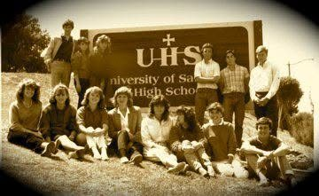

Mentorship
Someone in your corner.
Each spring venture team works with a USD MBA mentor alongside an industry entrepreneur. Students have people to turn to as they test ideas, make decisions, and prepare to pitch.

HOME|DONS BUSINESS INSTITUTE
A business-school dean on our advisory board. MBA mentors alongside our student founders. A working relationship with The Brink SBDC.

DBI Advisory Board member
The dean of USD’s business school serves on DBI’s advisory board.
Dean Tietje has also joined DBI students as a fall keynote speaker, bringing his perspective on business and higher education into the program.
Meet Dean Tietje at USDA partnership with purpose
Mentorship
Each spring venture team works with a USD MBA mentor alongside an industry entrepreneur. Students have people to turn to as they test ideas, make decisions, and prepare to pitch.
College coursework
DBI nominates students for opportunities to take business coursework through USD’s Knauss School of Business while they’re still at Cathedral Catholic.
The Brink SBDC
DBI also works with The Brink Small Business Development Center at USD. The Brink supports entrepreneurs through business advising, training, and workshops.
Explore The Brink SBDC ↗
Rooted in our history
Our connection goes back to the beginning.
Cathedral Catholic opened in 1957 as University of San Diego High School—“Uni.” Today, the DBI partnership continues that relationship through mentorship, shared learning, and new opportunities for Dons.
See the partnership in action